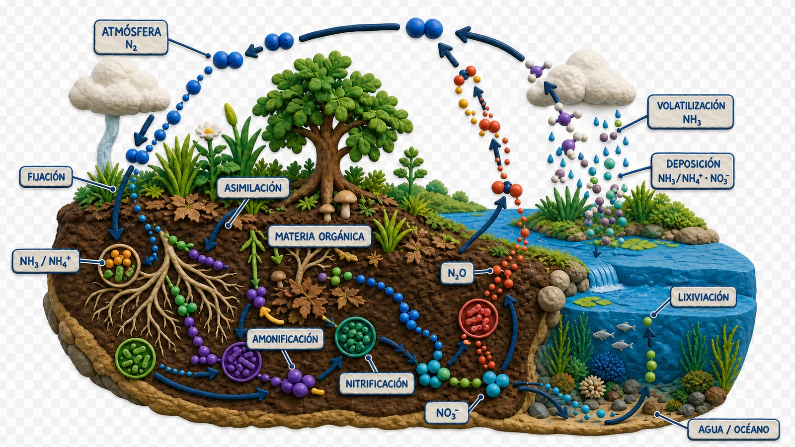
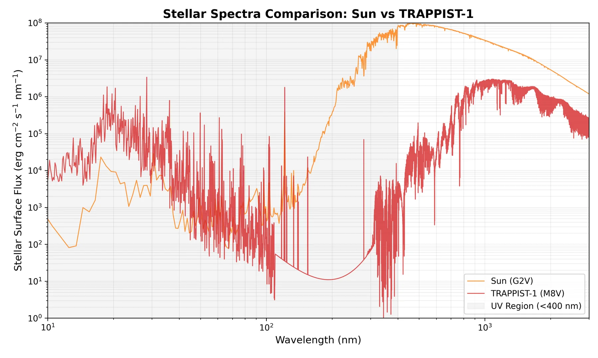
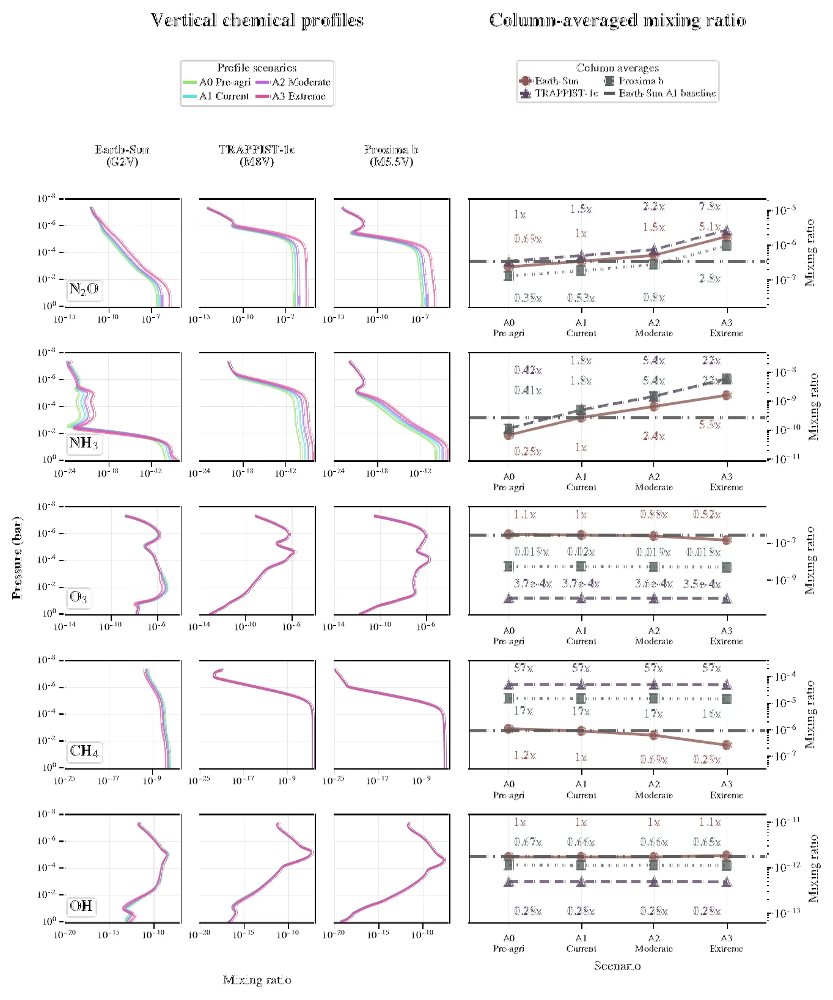
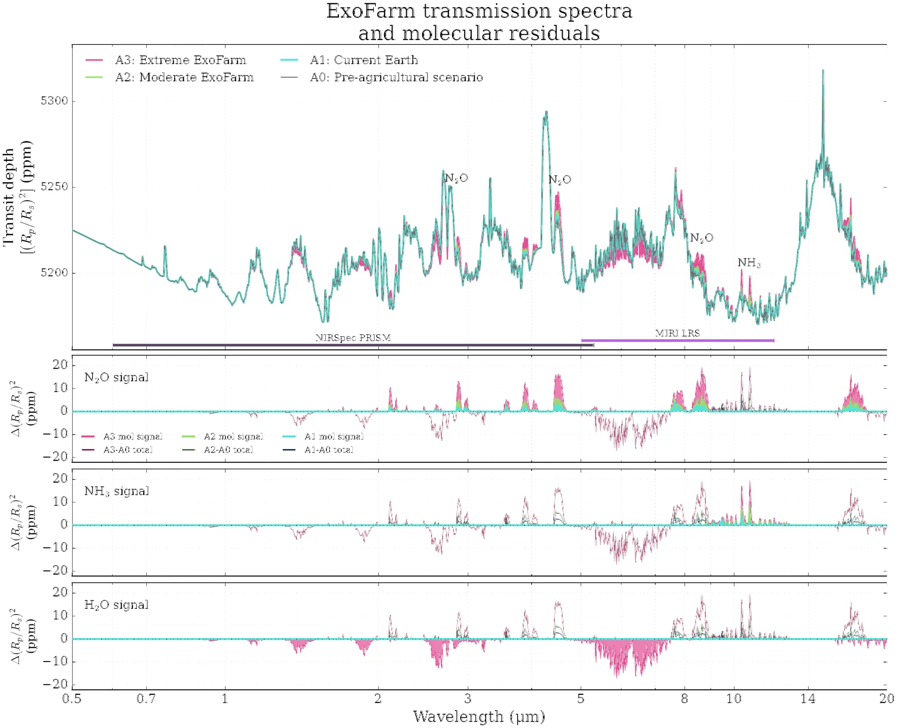
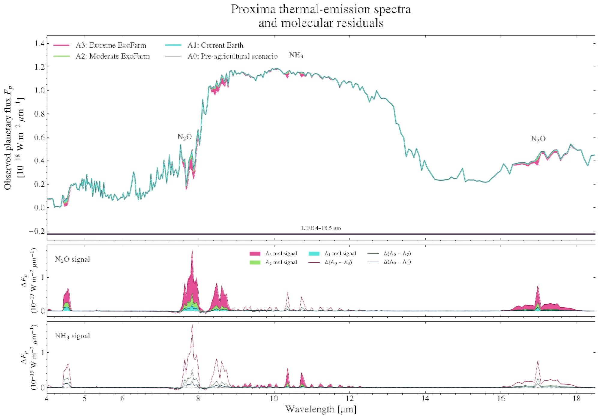
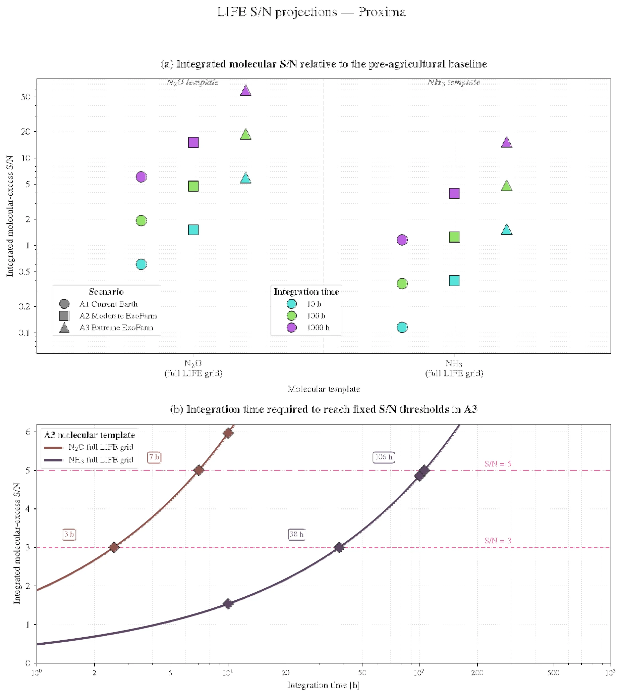

Figure P1: Complete conference poster. Tap or click on the image to open the original vector PDF (A0 format) in full resolution for detailed inspection of spectra, equations, and retrieval posteriors.
SUPPORTING MATERIAL I
Scientific References
Complete, verified bibliography of 84 research publications cited in the conference poster and developed manuscript sections. Use the search tool to instantly locate articles by author, topic, or instrument, and access direct DOI / arXiv links.
Showing 84 of 84 references
Agol et al. (2021)Refining the Transit-timing and Photometric Analysis of TRAPPIST-1: Masses, Radii, Densities, Dynamics, and Ephemerides.The Planetary Science Journal, 2, 1.DOI ↗
Angerhausen et al. (2024)Large Interferometer For Exoplanets (LIFE). XII. The Detectability of Capstone Biosignatures in the Mid-infrared—Sniffing Exoplanetary Laughing Gas and Methylated Halogens.The Astronomical Journal, 167, 128.DOI ↗
Barstow et al. (2016)Habitable worlds with: transit spectroscopy of the TRAPPIST-1 system?.Monthly Notices of the Royal Astronomical Society: Letters, 461, L92–L96.DOI ↗
Batalha et al. (2017)PandExo: A Community Tool for Transiting Exoplanet Science with JWST & HST.Publications of the Astronomical Society of the Pacific, 129, 064501.DOI ↗
Battye et al. (2017)Is nitrogen the next carbon?.Earth's Future, 5, 894–904.DOI ↗
Benneke & Seager (2013)How to Distinguish between Cloudy Mini-Neptunes and Water/Volatile-Dominated Super-EarthsThe Astrophysical Journal, 778, 153.DOI ↗
Bowles et al. (2019)The Neolithic Agricultural Revolution and the Origins of Private Property.Journal of Political Economy, 127.DOI ↗
Butterbach-Bahl et al. (2013)Nitrous oxide emissions from soils: how well do we understand the processes and their controls?.Philosophical Transactions of the Royal Society B: Biological Sciences, 368, 20130122.DOI ↗
Carrion-Gonzalez et al. (2023)Large Interferometer For Exoplanets (LIFE). X. Detectability of Currently Known Exoplanets and Synergies with Future IR/O/UV Reflected-Starlight Imaging Missions.Astronomy & Astrophysics.DOI ↗
Catling et al. (2018)Exoplanet Biosignatures: A Framework for Their Assessment.Astrobiology, 18, 709–738.DOI ↗
Cohen et al. (1995)Population Growth and Earth's Human Carrying Capacity.Science, 269, 341–346.DOI ↗
Coles et al. (2019)ExoMol molecular line lists – XXXV. A rotation-vibration line list for hot ammonia.Monthly Notices of the Royal Astronomical Society, 490, 4638–4647.DOI ↗
Conant et al. (2013)Patterns and Trends in Nitrogen Use and Nitrogen Recovery Efficiency in World Agriculture.Global Biogeochemical Cycles, 27, 558–566.DOI ↗
Dannert et al. (2022)Large Interferometer For Exoplanets (LIFE): II. Signal Simulation, Signal Extraction, and Fundamental Exoplanet Parameters from Single-Epoch Observations.Astronomy & Astrophysics, 664, A22.DOI ↗
Des Marais et al. (2002)Remote Sensing of Planetary Properties and Biosignatures on Extrasolar Terrestrial Planets.Astrobiology, 2, 153–181.DOI ↗
Des Marais et al. (2008)The NASA Astrobiology Roadmap.Astrobiology, 8, 715–730.DOI ↗
Domagal-Goldman et al. (2014)Abiotic Ozone and Oxygen in Atmospheres Similar to Prebiotic EarthThe Astrophysical Journal, 792, 90.DOI ↗
Domagal-Goldman et al. (2016)The Astrobiology Primer v2.0.Astrobiology, 16, 561–653.DOI ↗
Duque-Castaño et al. (2025)Machine-assisted classification of potential biosignatures in Earth-like exoplanets using low signal-to-noise ratio transmission spectra.Monthly Notices of the Royal Astronomical Society, 539, 1528–1552.DOI ↗
Fauchez et al. (2020)Sensitive Probing of Exoplanetary Oxygen via Mid-Infrared Collisional Absorption.Nature Astronomy, 4, 372–376.DOI ↗
France et al. (2016)The MUSCLES Treasury Survey. I. Motivation and OverviewThe Astrophysical Journal, 820, 89.DOI ↗
Franck et al. (2011)Harvesting the sun: New estimations of the maximum population of planet Earth.Ecological Modelling, 222, 2019–2026.DOI ↗
Galloway et al. (2013)A Chronology of Human Understanding of the Nitrogen Cycle.Philosophical Transactions of the Royal Society B: Biological Sciences, 368, 20130120.DOI ↗
Gao et al. (2015)Stability of CO₂ Atmospheres on Desiccated M Dwarf ExoplanetsThe Astrophysical Journal, 806, 249.DOI ↗
Gillon et al. (2020)The TRAPPIST-1 JWST Community Initiative.Bulletin of the American Astronomical Society, 52, 0208.DOI ↗
Gong et al. (2024)Anthropogenic-Driven Perturbations on Nitrogen Cycles and Interactions with Climate Changes.Current Opinion in Green and Sustainable Chemistry, 46, 100897.DOI ↗
Gordon et al. (2022)The HITRAN2020 molecular spectroscopic database.Journal of Quantitative Spectroscopy and Radiative Transfer, 277, 107949.DOI ↗
Grenfell et al. (2013)Potential Biosignatures in Super-Earth Atmospheres II. Photochemical Responses.Astrobiology, 13, 415–438.DOI ↗
Grenfell et al. (2014)Sensitivity of Biosignatures on Earth-like Planets Orbiting in the Habitable Zone of Cool M-Dwarf Stars to Varying Stellar UV Radiation and Surface Biomass Emissions.Planetary and Space Science, 98, 66–76.DOI ↗
Gruber et al. (2008)An Earth-system perspective of the global nitrogen cycle.Nature, 451, 293–296.DOI ↗
Gueymard et al. (2018)Revised Composite Extraterrestrial Spectrum Based on Recent Solar Irradiance Observations.Solar Energy, 169, 434–440.DOI ↗
Guzmán-Marmolejo et al. (2013)Abiotic Production of Methane in Terrestrial Planets.Astrobiology, 13, 550–559.DOI ↗
Haqq-Misra et al. (2022)Detectability of Chlorofluorocarbons in the Atmospheres of Habitable M-dwarf Planets.The Planetary Science Journal, 3, 60.DOI ↗
Haqq-Misra et al. (2022)Disruption of a Planetary Nitrogen Cycle as Evidence of Extraterrestrial Agriculture.The Astrophysical Journal Letters, 929, L28.DOI ↗
Haqq-Misra et al. (2022)Searching for technosignatures in exoplanetary systems with current and future missions.Acta Astronautica, 198, 194–207.DOI ↗
Haqq-Misra et al. (2025)Projections of Earth’s technosphere: Scenario modeling, worldbuilding, and overview of remotely detectable technosignatures.Technological Forecasting and Social Change, 218, 124194.DOI ↗
Hargreaves et al. (2019)Spectroscopic line parameters of NO, NO₂, and N₂O for the HITEMP database.Journal of Quantitative Spectroscopy and Radiative Transfer, 232, 35–53.DOI ↗
Harman et al. (2015)Abiotic O₂ Levels on Planets around F, G, K, and M Stars: Possible False Positives for Life?The Astrophysical Journal, 812, 137.DOI ↗
Huang et al. (2022)Assessment of Ammonia as a Biosignature Gas in Exoplanet Atmospheres.Astrobiology, 22, 171–191.DOI ↗
Jenkinson et al. (2001)The Impact of Humans on the Nitrogen Cycle, with Focus on Temperate Arable Agriculture.Plant and Soil, 228, 3–15.DOI ↗
Kaltenegger et al. (2007)Spectral Evolution of an Earth‐like Planet.The Astrophysical Journal, 658, 598–616.DOI ↗
Kaltenegger et al. (2020)High-resolution Transmission Spectra of Earth Through Geological Time.The Astrophysical Journal, 892, L17.DOI ↗
Konrad et al. (2022)Large Interferometer For Exoplanets (LIFE). III. Spectral resolution, wavelength range and sensitivity requirements based on atmospheric retrieval analyses of an exo-Earth.Astronomy & Astrophysics.DOI ↗
Kopparapu et al. (2013)Habitable Zones around Main-Sequence Stars: New EstimatesThe Astrophysical Journal, 765, 131.DOI ↗
Kopparapu et al. (2021)Nitrogen Dioxide Pollution as a Signature of Extraterrestrial Technology.The Astrophysical Journal, 908, 164.DOI ↗
Krissansen-Totton et al. (2018)Disequilibrium Biosignatures over Earth History and Implications for Detecting Exoplanet Life.Science Advances, 4, eaao5747.DOI ↗
Lin & Kaltenegger (2022)High-resolution Spectral Models of TRAPPIST-1e Seen as a Pale Blue Dot for ELT and JWST ObservationsMonthly Notices of the Royal Astronomical Society, 513, 2019–2038.DOI ↗
Lin et al. (2021)Differentiating modern and prebiotic Earth scenarios for TRAPPIST-1e: high-resolution transmission spectra and predictions for.Monthly Notices of the Royal Astronomical Society, 505, 3562–3578.DOI ↗
Loyd et al. (2016)The MUSCLES Treasury Survey. III. X-ray to Infrared Spectra of 11 M and K Stars Hosting PlanetsThe Astrophysical Journal, 824, 102.DOI ↗
Luger et al. (2015)Extreme Water Loss and Abiotic O₂ Buildup on Planets Throughout the Habitable Zones of M Dwarfs.Astrobiology, 15, 119–143.DOI ↗
Lustig-Yaeger et al. (2023)Earth as a Transiting Exoplanet: A Validation of Transmission Spectroscopy and Atmospheric Retrieval Methodologies for Terrestrial Exoplanets.The Planetary Science Journal, 4, 170.DOI ↗
MacDonald et al. (2023)POSEIDON: A Multidimensional Atmospheric Retrieval Code for Exoplanet Spectra.Journal of Open Source Software, 8, 4873.DOI ↗
Madhusudhan et al. (2009)A Temperature and Abundance Retrieval Method for Exoplanet Atmospheres.The Astrophysical Journal, 707, 24–39.DOI ↗
Meadows et al. (2018)Exoplanet Biosignatures: Understanding Oxygen as a Biosignature in the Context of Its Environment.Astrobiology, 18, 630–662.DOI ↗
Meadows et al. (2023)The Feasibility of Detecting Biosignatures in the TRAPPIST-1 Planetary System with JWST.The Planetary Science Journal, 4, 192.DOI ↗
Mullan et al. (2019)Population growth, energy use, and the implications for the search for extraterrestrial intelligence.Futures, 106, 4–17.DOI ↗
Polyansky et al. (2018)ExoMol molecular line lists XXX: a complete high-accuracy line list for water.Monthly Notices of the Royal Astronomical Society, 480, 2597–2608.DOI ↗
Prather et al. (2015)Measuring and Modeling the Lifetime of Nitrous Oxide Including Its Variability.Journal of Geophysical Research: Atmospheres, 120, 5693–5705.DOI ↗
Sagan et al. (1993)A search for life on Earth from the Galileo spacecraft.Nature, 365, 715–721.DOI ↗
Schwieterman et al. (2016)Identifying Planetary Biosignature Impostors: Spectral Features of CO and O4 Resulting from Abiotic O₂/O₃ Production.The Astrophysical Journal Letters, 819, L13.DOI ↗
Schwieterman et al. (2018)Exoplanet Biosignatures: A Review of Remotely Detectable Signs of Life.Astrobiology, 18, 663–708.DOI ↗
Schwieterman et al. (2022)Evaluating the Plausible Range of N₂O Biosignatures on Exo-Earths: An Integrated Biogeochemical, Photochemical, and Spectral Modeling ApproachThe Astrophysical Journal, 937, 109.DOI ↗
Schwieterman et al. (2024)An Overview of Exoplanet Biosignatures.arXiv e-prints.Source ↗
Schwieterman et al. (2024)Artificial Greenhouse Gases as Exoplanet Technosignatures.The Astrophysical Journal, 969, 20.DOI ↗
Seager et al. (2016)Toward a List of Molecules as Potential Biosignature Gases for the Search for Life on Exoplanets and Applications to Terrestrial Biochemistry.Astrobiology, 16, 465–485.DOI ↗
Segura et al. (2005)Biosignatures from Earth-Like Planets Around M Dwarfs.Astrobiology, 5, 706–725.DOI ↗
Seinfeld et al. (2016)Atmospheric Chemistry and Physics: From Air Pollution to Climate Change.John Wiley & Sons, Inc.Book ↗
Shcherbak et al. (2014)Global meta-analysis of the nonlinear response of soil nitrous oxide (N₂O) emissions to fertilizer nitrogenProceedings of the National Academy of Sciences, 111, 9199–9204.DOI ↗
Sneed et al. (2026)Stellar UV Spectrum Sensitivities and Numerical Discretization in Exoplanet Photochemical ModelingarXiv e-prints, arXiv:2606.05451.Source ↗
Sutton et al. (2013)Towards a Climate-Dependent Paradigm of Ammonia Emission and Deposition.Philosophical Transactions of the Royal Society B: Biological Sciences, 368, 20130166.DOI ↗
Tian et al. (2020)A comprehensive quantification of global nitrous oxide sources and sinks.Nature, 586, 248–256.DOI ↗
Tian et al. (2024)Global nitrous oxide budget (1980–2020).Earth System Science Data, 16, 2543–2604.DOI ↗
Tsai et al. (2017)VULCAN: An Open-source, Validated Chemical Kinetics Python Code for Exoplanetary Atmospheres.The Astrophysical Journal Supplement Series, 228, 20.DOI ↗
Tsai et al. (2021)A Comparative Study of Atmospheric Chemistry with VULCAN.The Astrophysical Journal, 923, 264.DOI ↗
Turbet et al. (2020)A Review of Possible Planetary Atmospheres in the TRAPPIST-1 System.Space Science Reviews, 216, 100.DOI ↗
Weisdorf et al. (2005)From Foraging to Farming: Explaining the Neolithic Revolution.Journal of Economic Surveys, 19, 561–586.DOI ↗
Wilson et al. (2021)The Mega-MUSCLES Spectral Energy Distribution of TRAPPIST-1.The Astrophysical Journal, 911, 18.DOI ↗
Wogan et al. (2026)Constraining Surface Fluxes and Atmospheric Biosignatures with Bayesian Regional Parameter InferenceThe Astrophysical Journal, 1004, 191.DOI ↗
Wordsworth et al. (2014)Abiotic Oxygen-Dominated Atmospheres on Terrestrial Habitable Zone Planets.The Astrophysical Journal Letters, 785, L20.DOI ↗
Wunderlich et al. (2019)Detectability of Atmospheric Features of Earth-like Planets in the Habitable Zone around M Dwarfs.Astronomy & Astrophysics, 624, A49.DOI ↗
Youngblood et al. (2016)The MUSCLES Treasury Survey. II. Intrinsic Lyα and Extreme Ultraviolet Spectra of K and M Dwarfs with ExoplanetsThe Astrophysical Journal, 824, 101.DOI ↗
Yurchenko et al. (2020)ExoMol line lists – XXXIX. Ro-vibrational molecular line list for CO₂Monthly Notices of the Royal Astronomical Society, 496, 5282–5291.DOI ↗
Zhang et al. (2020)Global Nitrogen Cycle: Critical Enzymes, Organisms, and Processes for Nitrogen Budgets and Dynamics.Chemical Reviews, 120, 5308–5351.DOI ↗
All references verified against ADS, CrossRef, and arXiv databases. Citations strictly adhere to the designated research draft boundary.
SUPPORTING MATERIAL II
Extended Scientific Context
An in-depth, structured scientific explanation of the ExoFarm modeling framework, photochemical mechanisms, spectral simulations, and Bayesian retrieval statistics. This material provides complete background and quantitative details for conference discussions.
01
The Question: Agriculture as an Exoplanet Technosignature
In the search for extraterrestrial life, atmospheric biosignatures seek gases and chemical disequilibria generated by biological metabolic networks. However, identifying signs of intelligent technological civilizations—technosignatures—has traditionally focused on narrow-band radio transmissions, optical pulses, or massive planetary megastructures. Atmospheric technosignatures provide a compelling alternative: detecting volatile chemical species released by industrial and planetary-scale transformations of an inhabited world.
A major vulnerability of pollution-based technosignatures (such as chlorofluorocarbons or industrial NO₂) is their transient nature. As technological civilizations advance, energy efficiency, clean manufacturing, and environmental remediation may dramatically curtail hazardous atmospheric pollution on timescales of decades to centuries (Haqq-Misra et al. 2025). In contrast, sustained food production is an inescapable requirement for maintaining large populations.
Core Research Question: How does stellar ultraviolet irradiation alter the atmospheric accumulation, vertical distribution, and persistence of N₂O and NH₃ emitted by intensive planetary-scale agriculture, and can these signatures be detected and robustly retrieved in exoplanet transmission and thermal-emission spectra?
The challenge lies in attribution: high concentrations of N₂O or NH₃ do not, on their own, prove an extraterrestrial agricultural origin. N₂O can be released by natural microbial denitrification, and NH₃ is subject to strong aqueous and surface sinks. A rigorous assessment therefore requires modeling the entire physical pathway: from agricultural surface emission fluxes, through stellar photochemistry, to synthetic observations and Bayesian retrieval inference.
Nitrogen is essential for all known biology, forming the peptide backbone of proteins and the nucleobases of genetic information (DNA and RNA). While molecular nitrogen (N₂) makes up approximately 78% of Earth's atmosphere, its formidable triple bond (N≡N, dissociation energy 945 kJ/mol) makes it biochemically unreactive and inaccessible to the vast majority of organisms without fixation.
In a natural biosphere, atmospheric nitrogen enters the reactive pool via biological nitrogen fixation (BNF) carried out by specialized diazotrophs:
N₂ + 8H⁺ + 8e⁻ → 2NH₃ + H₂
This reactive nitrogen circulates through soil and aquatic reservoirs through ammonification, nitrification, and denitrification:
Nitrification: Ammonium is sequentially oxidized to nitrite and nitrate under oxic conditions: NH₄⁺ + 1.5 O₂ → NO₂⁻ + 2H⁺ + H₂O, followed by NO₂⁻ + 0.5 O₂ → NO₃⁻.
Denitrification: Under anoxic or oxygen-limited conditions, microbes reduce nitrate back to nitrogen gas: NO₃⁻ → NO₂⁻ → NO → N₂O → N₂. When denitrification is incomplete, nitrous oxide (N₂O) leaks directly into the atmosphere.

Figure 1: The Planetary Nitrogen Cycle and Agricultural Disruption.
Schematic representation of major planetary nitrogen transformations, illustrating how industrial Haber–Bosch synthesis injects reactive nitrogen into soils, driving volatilization of gaseous NH₃ and microbial leakage of N₂O. Tap/click to enlarge.
The Industrial Disruption: The Haber–Bosch Transition
The invention of the Haber–Bosch industrial process in the early 20th century bypassed ecological nitrogen constraints by catalytically synthesizing ammonia directly from atmospheric N₂ and H₂:
N₂ + 3H₂ ⇌ 2NH₃ (ΔH = -92.4 kJ/mol)
Today, industrial agriculture accounts for approximately 65% of global NH₃ emissions and 26–30% of global N₂O emissions (Haqq-Misra et al. 2022; Tian et al. 2024). When applied nitrogen exceeds crop absorption capacity, reactive nitrogen cascades through planetary reservoirs, creating strong atmospheric flux enhancements.
Asymmetry between NH₃ and N₂O Tracers:
Ammonia (NH₃): Highly soluble, rapid dry and wet deposition (vdep ≈ 1 cm/s), efficiently scavenged by oceans and oxidized by OH radicals. Atmospheric lifetime is extremely short (hours to days), making accumulation difficult without saturated sinks.
Nitrous Oxide (N₂O): Chemically inert in the troposphere, negligible surface deposition (vdep ≈ 10⁻⁴ cm/s), with an atmospheric lifetime on modern Earth of ~116–120 years. Destroyed primarily in the stratosphere via ultraviolet photolysis: N₂O + hν → N₂ + O(¹D). It integrates distributed agricultural emissions globally.
03
ExoFarm Scenarios & Surface Flux Modeling
Previous explorations of agricultural technosignatures assumed ad hoc uniform atmospheric mixing ratios. In contrast, this study implements a flux-driven photochemical modeling framework using the 1D chemical kinetics code VULCAN (Tsai et al. 2017, 2021). Surface emissions of NH₃ and N₂O are prescribed as lower-boundary flux conditions, allowing the atmosphere to self-consistently establish steady-state vertical distributions.
Figure 2: End-to-End Scientific Modeling Architecture.
The pipeline connects surface emission fluxes (A0–A3) across stellar environments to VULCAN photochemical equilibria, POSEIDON spectral synthesis, instrumental noise realizations, and MultiNest Bayesian inverse retrievals. Tap/click to enlarge.
Four agricultural forcing scenarios are defined by scaling the increment between the pre-agricultural baseline (A0) and the modern-Earth benchmark (A1):
Fᵢ(Aⱼ) = Fᵢ(A₀) + αᵢ,ⱼ · [ Fᵢ(A₁) - Fᵢ(A₀) ]
Table 1: Lower-boundary surface fluxes adopted in VULCAN calculations across ExoFarm scenarios.
Scenario ID
Description
α(NH₃)
α(N₂O)
NH₃ Surface Flux (molecules cm⁻² s⁻¹)
N₂O Surface Flux (molecules cm⁻² s⁻¹)
A0
Pre-agricultural baseline
0
0
2.94 × 10⁹
1.58 × 10⁹
A1
Modern Earth benchmark
1
1
1.30 × 10¹⁰
2.30 × 10⁹
A2
Moderate ExoFarm
3.50
2.55
3.82 × 10¹⁰
3.416 × 10⁹
A3
Extreme ExoFarm
15.0
15.0
1.54 × 10¹¹
1.238 × 10¹⁰
The A2 scenario adopts the moderate parameters from Haqq-Misra et al. (2022), while A3 reflects an upper-envelope technosphere sustaining carrying-capacity demands (Battye et al. 2017; Cohen 1995; Haqq-Misra et al. 2025). The background terrestrial atmosphere is maintained across all runs with fixed eddy mixing (Kzz) and thermal profiles to rigorously isolate the chemical response to agricultural forcing.
04
Stellar Radiation & Photochemical Amplification
The same surface emission flux produces vastly different atmospheric signatures depending on the spectral energy distribution (SED) of the host star. We modeled three distinct stellar irradiation environments:
Sun (G2V): High Near-UV (NUV, 200–400 nm) flux driving energetic photolysis of trace nitrogen species.
TRAPPIST-1 (M8V): Ultracool M-dwarf (Mega-MUSCLES SED, Wilson et al. 2021). Severely NUV-deficient, with active FUV/Lyman-α.
Proxima Centauri (M5.5V): Nearby M-dwarf (MUSCLES v22 SED, France et al. 2016; Loyd et al. 2016).

Figure 3: Stellar Surface-Flux Spectra Comparison.
The shaded area (< 400 nm) highlights the critical UV regime where M dwarfs emit orders of magnitude less NUV flux than the Sun, drastically reducing photolysis rates. Tap/click to enlarge.
Vertical Survival and Photochemical Shielding
The profound deficit of Near-UV photons around M dwarfs suppresses direct photodissociation of NH₃ (NH₃ + hν → NH₂ + H) and N₂O (N₂O + hν → N₂ + O(¹D)). As a consequence:
Nitrous Oxide (N₂O): Roughly proportional to surface flux within each stellar environment, but reaches 7.5× higher column abundance on TRAPPIST-1e compared to the Earth-Sun A1 reference, surviving up to much lower pressures.
Ammonia (NH₃): Under solar irradiation, NH₃ is destroyed rapidly in the lower troposphere. Under TRAPPIST-1e irradiation, reduced photolysis allows NH₃ to penetrate deep into the upper atmosphere, achieving column abundances up to 22× higher than the modern-Earth reference.
Oxidizing Robustness: Hydroxyl (OH) radicals remain present in the lower atmosphere, confirming that the accumulation of NH₃ is not an abiotic artifact of an unreactive atmosphere, but a true anomaly in an active oxidizing environment.

Figure 4: Photochemical Atmospheric Response (VULCAN).
Vertical mixing-ratio profiles (columns 1–3) and column-averaged abundances (column 4) across agricultural scenarios A0 (green), A1 (cyan), A2 (purple), and A3 (magenta). Tap/click to enlarge.
We investigated whether these photochemically amplified atmospheres could be observed in transmission around the benchmark ultracool dwarf TRAPPIST-1e (Rp = 0.920 R⊕, Mp = 0.6356 M⊕, R⋆ = 0.1192 R⊙, Teff = 2566 K, log g = 5.2396, [Fe/H] = 0.04; Agol et al. 2021; Ducrot et al. 2020). Native transmission spectra were computed with POSEIDON (MacDonald 2023) at spectral resolution R = 10,000 across 0.5–20 µm using a 100-layer atmosphere (1 to 10⁻⁷ bar) and line-by-line cross sections from ExoMol, HITEMP, and HITRAN.
Counterfactual Molecular Excess Definition
To isolate the spectral contribution of each agricultural perturbation relative to the pre-agricultural baseline (A0), we define two diagnostic quantities: the total spectral difference ΔDAj − A0(λ) and the counterfactual single-molecule signal ΔX(Aj, λ) for species X ∈ {N₂O, NH₃, H₂O}:
Here, DX→A0(Aj, λ) is computed by replacing only the vertical profile of species X with its pre-agricultural A0 profile while holding the remaining atmospheric composition and P–T structure fixed at scenario Aj. In transmission, the most prominent N₂O bands appear near 2.8 µm, 4.5 µm, and 8.6 µm, reaching maximum differential transit depths of ~17.5 ppm in A3 (~9.2 ppm in A2; ~4.2 ppm in A1). The strongest NH₃ feature occurs near 10.7 µm with an amplitude of ~8.3 ppm in A3, alongside weaker bands at 1.5–2.3 µm, 3.0 µm, and 6.1 µm.

Figure 5: TRAPPIST-1e Transmission Spectra & Net Molecular Residuals.
Top panel: Total transit depth (Rp/R⋆)² across 0.5–20 µm for scenarios A0–A3. Second panel: Net spectral residual relative to pre-agricultural baseline A0. Bottom three panels: Isolated counterfactual molecular signals ΔX(Aj, λ) for N₂O, NH₃, and H₂O. Tap/click to enlarge.
To evaluate practical detectability with the James Webb Space Telescope (JWST), we simulated realistic observational noise using PandExo (Batalha et al. 2017) for two complementary modes covering the near- and mid-infrared nitrogen bands:
JWST NIRSpec PRISM: 0.6–5.3 µm (captures the 2.8 µm and 4.5 µm N₂O bands and shortwave NH₃ features).
JWST MIRI LRS (slitless): 5.0–12.0 µm (covers the 7.8–8.6 µm N₂O complex and the 10.5–10.7 µm NH₃ fundamental band).
Simulations adopted the stellar magnitude J = 11.354, an out-of-transit baseline equal to 3× the transit duration, an 80% full-well saturation limit, and zero systematic noise floor to establish optimistic photon-limited performance. For Ntr co-added transits, channel uncertainties scale as σi(Ntr) = σi,1 / √Ntr. Assuming independent spectral bins i within instrument k, the integrated molecular signal-to-noise ratio is computed in quadrature:
Figure 6: Molecular Signal-to-Noise in JWST Transmission Spectroscopy (TRAPPIST-1e).Panel (a): Spectral counterfactual signals for N₂O (purple) and NH₃ (magenta) in scenario A3 rebinned to NIRSpec PRISM and MIRI LRS wavelength grids, compared against 1σ observational noise envelopes for 1, 10, and 100 transits (and 100-transit simulated points). Panel (b): Integrated molecular S/N accumulated across each instrument bandpass at 1, 10, and 100 transits for scenarios A1, A2, and A3, with dashed horizontal reference thresholds at S/N = 3 and S/N = 5. Tap/click to enlarge.
As shown in Figure 6a, single-transit noise envelopes overwhelm the molecular signals across the entire spectrum, and even after 100 transits the individual channel amplitudes remain comparable to or smaller than the 1σ per-bin uncertainties. Integrating over all spectral channels (Figure 6b) yields the following progression:
Table 2: Integrated molecular S/N in JWST transmission spectroscopy for extreme agricultural scenario A3 on TRAPPIST-1e, and extrapolated transits required to reach S/N = 3 and 5 under √Ntr scaling.
Molecule (Scenario A3)
Instrument Bandpass
S/N (1 Transit)
S/N (10 Transits)
S/N (100 Transits)
Transits for S/N = 3
Transits for S/N = 5
N₂O
NIRSpec PRISM (0.6–5.3 µm)
0.29
0.93
2.9
105
290
N₂O
MIRI LRS (5.0–12.0 µm)
0.09
0.29
0.93
1,044
2,900
NH₃
MIRI LRS (5.0–12.0 µm)
< 0.02
< 0.06
< 0.20
27,320
75,890
NH₃
NIRSpec PRISM (0.6–5.3 µm)
< 0.01
< 0.02
< 0.06
332,476
923,544
Observational Barrier in Transmission Spectroscopy:
Even under the extreme ExoFarm scenario (A3, 15× modern agricultural flux) and zero systematic noise floor, N₂O with NIRSpec PRISM—the single most favorable molecule–instrument combination—reaches only S/N ≈ 2.9 after 100 transits, requiring 105 transits for S/N = 3 and 290 transits for S/N = 5. Ammonia remains completely out of reach (>2.7 × 10⁴ transits). Consequently, detecting agricultural nitrogen technosignatures in transmission around terrestrial M-dwarf planets is prohibitive within realistic JWST campaign allocations.
06
Thermal Emission with LIFE: Signal-to-Noise & Bayesian Retrievals
Because transmission geometry yields marginal signals, we examined direct mid-infrared thermal emission spectroscopy using the proposed LIFE (Large Interferometer for Exoplanets) spaceborne nulling interferometer concept (Quanz et al. 2022; Konrad et al. 2022; Angerhausen et al. 2024). Thermal emission directly probes vertical temperature gradients across the mid-infrared (4–18.5 µm), where N₂O and NH₃ possess strong fundamental ro-vibrational bands.
To maximize photon collection at 1.30 pc, we modeled a temperate terrestrial analog orbiting Proxima Centauri (Rp = 1.23 R⊕, Mp = 1.59 M⊕, g ≈ 10.30 m s⁻², R⋆ = 0.141 R⊙, Teff = 3050 K; Anglada-Escudé et al. 2016; Suárez Mascareño et al. 2020). In thermal emission, agricultural scenarios produce deep absorption troughs: N₂O generates two prominent residual depressions at 7–9 µm (reaching −0.74 × 10⁻¹⁸ W m⁻² µm⁻¹ in A3) and around 17 µm (reaching −0.90 × 10⁻¹⁸ W m⁻² µm⁻¹), while NH₃ creates a distinct trough at 10–11 µm (reaching −0.64 × 10⁻¹⁸ W m⁻² µm⁻¹ in A3).

Figure 7: Mid-Infrared Thermal Emission Spectra & Molecular Residuals (Proxima b Analog).
Top panel: Planetary thermal emission flux (10⁻¹⁸ W m⁻² µm⁻¹) across 4–20 µm for A0–A3. Second panel: Total spectral difference relative to pre-agricultural baseline A0. Bottom panels: Counterfactual molecular emission residuals for N₂O, NH₃, and H₂O. Tap/click to enlarge.
Observational sensitivity was simulated with LIFEsim (Dannert et al. 2022) in the LIFE reference configuration (LIFE X; Carrión-González et al. 2023): four 2 m collector apertures operating over 4–18.5 µm at spectral resolution R = 20 (31 spectral channels) with 5% total instrument throughput. The noise budget accounts for astrophysical photon noise from stellar leakage, local zodiacal thermal emission, and exozodiacal dust at 3 zodis, assuming scenarios without systematic floor limitations so that per-bin flux uncertainty scales as σi(t) ∝ t−1/2 and quadrature-summed molecular S/N grows as √t.

Figure 8: Molecular Signal-to-Noise for the Proxima Centauri b Analog with LIFE.Panel (a): Spectral counterfactual signals |ΔX| for N₂O (purple) and NH₃ (magenta) in scenario A3 rebinned to the 31 LIFE channels (R = 20, 4–18.5 µm), plotted against 1σ LIFEsim noise curves for 1, 10, and 100 hours of observation. Panel (b): Integrated molecular S/N accumulated across the full LIFE bandpass at 1, 10, and 100 hours for scenarios A1, A2, and A3, with dashed horizontal reference lines at S/N = 3 and S/N = 5. Tap/click to enlarge.
Quantitative LIFE Thermal-Emission S/N Progression & Integration Times
In striking contrast to JWST transmission spectroscopy, Figure 8a shows that the 7.5–8.5 µm and 16–18 µm N₂O bands in scenario A3 approach the 1σ noise curve within 1 hour and clearly exceed the 10-hour and 100-hour noise envelopes, while the 10–11 µm NH₃ band emerges above the per-channel uncertainty between 10 and 100 hours. Quadrature integration over all 31 spectral channels (Figure 8b) demonstrates rapid signal accumulation:
Table 3: Integrated molecular S/N in LIFE mid-infrared thermal emission (Proxima b analog, 4–18.5 µm, R = 20) and integration times required to reach S/N = 3 and 5 under √t scaling.
Scenario & Molecule
Primary Mid-IR Bands
S/N (1 h)
S/N (10 h)
S/N (100 h)
Time for S/N = 3
Time for S/N = 5
A3 (Extreme) — N₂O
7.5–8.5 µm & 16–18 µm
1.89
5.97
18.86
~3 h (2.5 h)
~7 h (7.0 h)
A3 (Extreme) — NH₃
9.5–11.5 µm
0.49
1.54
4.86
~38 h
~106 h
A1 (Modern Earth) — N₂O
7.5–8.5 µm & 16–18 µm
0.19
0.61
1.92
~244 h
~678 h
A1 (Modern Earth) — NH₃
9.5–11.5 µm
0.04
0.12
0.37
> 6,500 h
> 18,000 h
Why Integrated S/N Alone Is Not Enough (Template S/N vs. Bayesian Retrieval):
While integrated molecular S/N provides a crucial first-order metric of instrumental sensitivity, it is an optimistic template-matching diagnostic: it assumes that the exact spectral shape of the molecular excess is known a priori and that the reference atmospheric state is fixed without parameter degeneracies. In real spectral inversion, molecular features overlap with H₂O, CO₂, CH₄, and O₃ and are degenerate with the vertical pressure–temperature (P–T) profile and planetary radius. Establishing true molecular identification and abundance constraints therefore requires full Bayesian atmospheric retrievals.
Bayesian Atmospheric Retrieval Architecture
To rigorously account for parameter degeneracies, we performed full Bayesian atmospheric retrievals on synthetic LIFE datasets (at 1, 10, and 100 hours for A1 and A3) using POSEIDON coupled with the nested sampling algorithm MultiNest (800 live points). The retrieval parameter vector simultaneously explores:
Six vertically constant (isochemical) log-mixing ratios: log₁₀(Xi) for H₂O, CO₂, CH₄, O₃, N₂O, and NH₃ (uniform priors U(−12, −1)), with N₂ filling the background remainder.
Planetary reference radius: Rp,ref at 1 bar (Gaussian prior N(1.23 R⊕, 0.05 R⊕)).
Figure 9: Bayesian Abundance Retrievals (1, 10, and 100 Hours).
Marginalized posterior probability distributions for H₂O, CO₂, CH₄, O₃, N₂O, and NH₃ in scenarios A1 (green) and A3 (magenta). Vertical dotted lines mark effective pre-agricultural reference abundances (A0). Tap/click to enlarge.
Bayesian Evidence & Model Comparison
Molecular detection significance was quantified by running nested-sampling retrievals with and without each target species i and computing the log Bayes factor ln Bi = ln Zfull − ln Zwithout i, converted into an equivalent calibrated significance σcal (following Benneke & Seager 2013):
Table 4: Bayesian evidence comparisons (ln B ± δnum and calibrated significance σcal) for LIFE observations.
Time
Scenario
Metric
H₂O
CO₂
CH₄
O₃
N₂O
NH₃
10 h
A3 (Extreme)
ln B
242.08 ± 0.31
4548.02 ± 0.35
27.92 ± 0.29
0.24 ± 0.29
9.142 ± 0.292
-0.226 ± 0.293
σcal
22.15
95.42
7.76
1.42
4.66
—
100 h
A1 (Modern)
ln B
2252.63 ± 0.35
47460.68 ± 0.43
307.90 ± 0.34
40.13 ± 0.34
9.834 ± 0.341
-0.590 ± 0.344
σcal
67.19
308.11
24.95
9.22
4.82
—
100 h
A3 (Extreme)
ln B
1952.51 ± 0.37
39540.78 ± 0.40
274.71 ± 0.34
20.84 ± 0.34
84.661 ± 0.347
2.749 ± 0.345
σcal
62.56
281.23
23.58
6.77
13.22
2.85
Key Quantitative Retrieval Discoveries:
Early N₂O Recovery: In scenario A3, N₂O receives strong molecular evidence by 10 hours (ln B = 9.142 ± 0.292, 4.66σcal) and definitive evidence by 100 hours (ln B = 84.661 ± 0.347, 13.22σcal).
Moderate NH₃ Confirmation: Ammonia requires 100 hours in A3 to reach moderate evidence (ln B = 2.749 ± 0.345, 2.85σcal), providing positive complementary identification alongside N₂O.
Joint Atmospheric Enrichment: The joint posterior probability that both N₂O and NH₃ simultaneously exceed their modern-Earth (A1) agricultural benchmarks reaches 98.67%, multiplying the prior odds by a factor of KR ≈ 113.92 (~114-fold update).
07
Limitations, Interpretation & Future Directions
A cornerstone of rigorous astrobiology is maintaining strict caution regarding false positives and model simplifications. The findings of this study demonstrate an observable pathway, but several key limitations must guide future investigations:
Biogeochemical Decoupling
Surface fluxes were scaled mathematically (1×, 3.5×, 15×) rather than modeled through coupled soil-crop-water biogeochemical dynamics. Real agricultural systems exhibit nonlinear nitrogen saturation and localized emissions.
Fixed Thermal & Mixing Structures
Calculations assumed fixed 1D P–T and Kzz profiles. Because N₂O is a potent greenhouse gas, abundances of ~87 ppm in scenario A3 would induce noticeable radiative warming that requires self-consistent radiative-convective coupling.
Stellar UV Sensitivity & Discretization
Photochemical outcomes depend sensitively on the adopted stellar UV spectrum, stellar flare activity, and numerical wavelength binning during photolysis rate integration (Sneed et al. 2026).
3D Dynamics & Tidal Locking
Habitable planets around M dwarfs are tidally locked. Atmospheric circulation is dominated by day-night transport and vigorous substellar upwelling that 1D models cannot fully capture.
Take-Home Message for Conference Discussions
Under M-dwarf stellar irradiation, low Near-UV flux acts as a protective shield that substantially increases the vertical persistence of N₂O and NH₃. While JWST transmission spectroscopy remains challenging even for extreme agricultural perturbations, mid-infrared nulling interferometry with LIFE opens a realistic observational window for detecting and characterizing intensive exoplanetary nitrogen cycles within reasonable exposure times.
📝
Manuscript Status
This research paper is currently in preparation. In accordance with author directives, public release is restricted to materials approved prior to the writing cutoff. Publication details and article links will be provided upon formal publication.